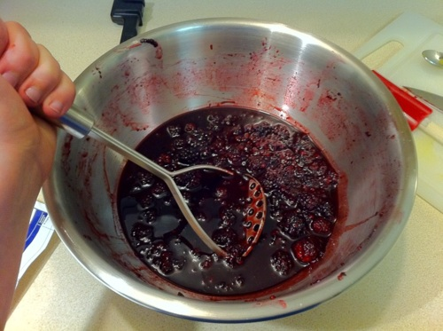
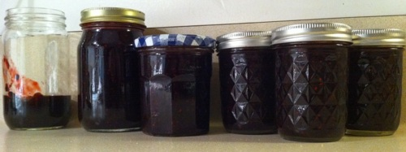

Jam & Laziness
I make jam because I’m lazy.
But, you say, can’t you buy jam from the store? How much more lazy can you get?
Aha, I say, but then you have to put on pants. And find your keys. And find your preeeeeeciousiPhone. And drive to the store. And find the jam. And find the right jam that doesn’t have all that weird coloring and HFCS. That’s work, people. Hard work.
The solution to this madness?* Freezer jam. You can make it from easily stored ingredients in less time than it takes to go to the store. And I’m only somewhat lying.
There’s no cooking and above all, NO CANNING. I don’t know about you, but the idea of doing a lot of work to give myself botulism…eh.
Freezer jam is so-called because it’s stored in the freezer instead of all that canning nonsense, and it’s not cooked so it actually tastes like fruit. Even with supermarket frozen berries, it’s better than just about anything you can buy in the store. And you don’t even need any pants.

What you will need is:
- Fruit (fresh or frozen, both work great)
- Pectin (the normal powder kind, not the gel or the low-sugar stuff)
- a crapton of sugar (somewhere about 4-5 cups)
- lemon juice (optional)
- salt (optional)
- some empty jars or tupperware containers
For this batch, I used two 1lb bags of blackberries from Safeway. The better the fruit, the better the jam, but this is what I had on hand. It works.

The fruit needs to be room temperature, so if you’re working from frozen, I recommend defrosting in the microwave. If you just dump berries in a bowl, you’ll be waiting about four hours for them to defrost. Not that I would know.
THEN HULK SMASH BERRIES! GRRRRRRRAAAAAAA!!!!

You can do this in the food processor…but it’s too easy to puree the fruit or make it all choppy. The potato masher approach works best, IMHO. And it’s very satisfying. BERRY SMASH GOOD.
When you’re done, measure how much fruit you have.
The pectin box will have a recipe for no-cook freezer jam, and I base how much sugar to add on that. It depends on what your fruit is. For blackberries, it’s 5.5 cups for a quart of berries. This batch was less than a quart so I used only 4.5 cups. It’s fine to use a little less than they say, but don’t reduce it dramatically. You need the sugar for it to jell properly.
Dump the disturbingly large amount of sugar in the berry mixture and stir around. Leave it to sit for about 10 minutes, or until all the sugar crystals have dissolved. Stirring makes it go faster, but it’s fine to go off and play Angry Birds or something.**
Usually this is where I add lemon juice (1-2 teaspoons) and a tiny bit of salt (1/8 teaspoon), but it’s optional. When I have lemon on hand, I use it, and if I don’t, I don’t. That’s just how I roll.
Once that’s done, dump pectin in sauce pan, add 3/4 cup water, bring to boil, boil for minute. It’s easy like Sunday morning.***

Then dump the boiling pectin in the fruit and stir around for a couple minutes until you’re really really really sure it’s all mixed in.
Then divide up between your containers. Now you’ve got a use for all those old jam jars you save for no readily apparent reason and your husband keeps asking why you save them and then stealthily recycling when you’re not looking. No. Not today, for today you are vindicated! YES!

Aren’t they lovely?
They’ll need to sit on the counter for 24 hours to set up****, but you should see them start to jell in an hour or so. After that, they keep in the fridge for three weeks or the freezer for up to a year. (I’ve never had a batch last that long, though.)
Hooray for lazy!
~~~~
* This line was “How to get out of this jam?” in the first draft. Don’t worry, I already slapped myself.
** Who wants to bet when this reference will seem old and absurdly dated? I call July 2012.
*** OF COURSE this popped into my head while writing and now it won’t leave. If I have to suffer, you have to suffer.
**** Thus the “kind of lying” part. I suppose it doesn’t take 24 hours to get to the store unless you’re Pa Ingalls.
- 0 comments
- —
- posted in cooking, jam